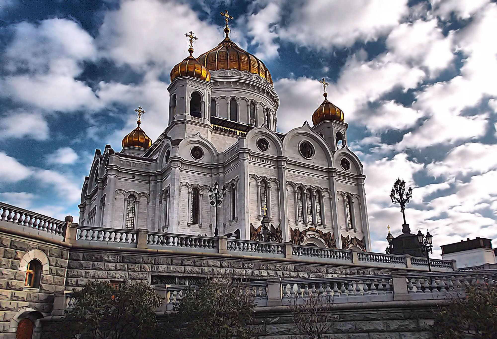

.png)
Интересные места
Храм Христа Спасителя
Храм Христа Спасителя (или Храм Рождества Христова) — кафедральный собор Русской православной церкви, расположенный в центральной части Москвы на улице Волхонке. Построен в 1990-х годах и является воссозданием одноимённого храма, разрушенного в 1931 году. Самый большой православный храм России. Находится на возвышении, окружён небольшим парком с комплексом зданий и сооружений религиозного и светского назначения.
Государственный исторический музей
Государственный исторический музей (ГИМ) — крупнейший национальный исторический музей России. Основан в 1872 году, здание на Красной площади Москвы было построено в 1875–1883 годах по проекту архитектора Владимира Шервуда и инженера Анатолия Семёнова. Фонд современного ГИМ насчитывает более 5 млн единиц хранения и 14 млн листов документальных материалов. Число посетителей музея ежегодно превышает 1,2 млн человек. В настоящее время в музейное объединение входят Храм Василия Блаженного, Музей Отечественной войны 1812 года и Палаты Романовых. С 1990 года входит в список объектов всемирного наследия ЮНЕСКО как часть ансамбля Красной площади.

Третековская галерея
Третьяко́вская галере́я, Госуда́рственная Третьяко́вская галере́я (сокр. ГТГ; разг. Третьяко́вка) — российский государственный художественный музей в Москве, созданный на основе исторических коллекций купцов братьев Павла и Сергея Михайловичей Третьяковых; одно из крупнейших в мире собраний русского изобразительного искусства. История галереи традиционно отсчитывается с 1856 года — времени первых документированных приобретений П. М. Третьякова; в 1867 году галерея была открыта для посещения, а в 1892 году передана в собственность Москве. На момент передачи коллекция музея насчитывала 1276 картин, 471 рисунок, 10 скульптур русских художников, а также 84 картины иностранных мастеров.
Большой театр
Впервые после двадцатилетнего перерыва балет Мариинского театра выступит на Исторической сцене Большого. Четыре представления балета «Дон Кихот» будут показаны 24, 25 (12:00 и 19:00) и 26 мая 2024 года. 2024-04-26. Объявленияю. Продажа билетов по программе «Доступный Большой». Открывается продажа билетов по программе «Доступный Большой» на представления балета «Легенда о любви», вечера балета «Классика и современность» и опер «Травиата» и «Иоланта».
О нас
Сайт "Экскурсии Москвы" – это идеальное место для тех, кто хочет узнать больше об истории и культуре столицы России. Здесь вы найдете огромный выбор экскурсий по различным тематикам, от классических осмотров достопримечательностей до нестандартных программ, которые позволят вам увидеть Москву совершенно по-новому.
На сайте представлены как групповые, так и индивидуальные экскурсии, а также возможность заказать экскурсию с личным гидом. Вы сможете выбрать маршрут и формат экскурсии, наиболее подходящий именно вам и вашим интересам.
Кроме того, на сайте "Экскурсии Москвы" вы найдете информацию о самых популярных музеях, парках, выставочных залах и других достопримечательностях Москвы, а также сможете забронировать билеты заранее. Таким образом, вы сэкономите время и сможете более глубоко погрузиться в культуру и атмосферу этого удивительного города.
Посетив сайт "Экскурсии Москвы", вы откроете для себя множество возможностей для интересного и познавательного времяпровождения в столице России. Погрузитесь во все богатства и красоту Москвы вместе с нами!